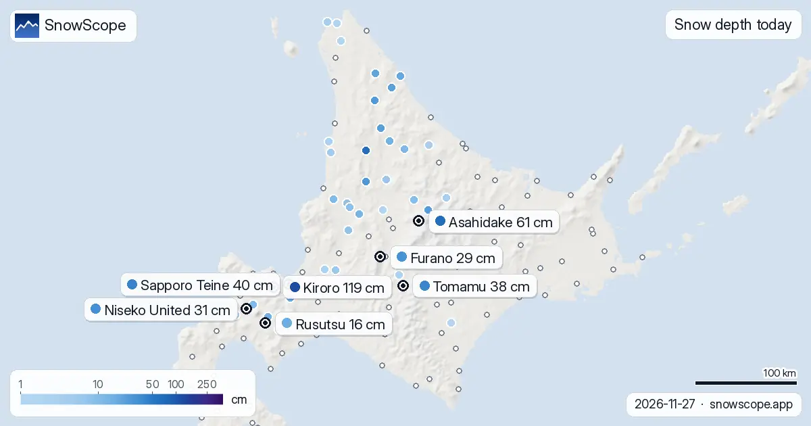

北海道の雪情報（2026年11月27日）：キロロは1 m超、ニセコとルスツはまだ少なめ
北海道は12月最初のスキーシーズンを迎える準備ができているでしょうか。2026年11月27日の時点では、その答えは場所によって大きく変わります。SnowScope マップでは、キロロの上部ゲレンデにはすでに約119 cm、札幌国際には約103 cmの雪がある一方、ニセコユナイテッドは約31 cm、富良野は約29 cm、ルスツはわずか約16 cmです。北海道にある133のスキー場のうち、今日上部ゲレンデに雪があるのは57か所で、30 cm以上あるのは12か所です。
SnowScope アプリでHokkaidoの降雪予報をチェック積雪深、アラート、3Dマップを無料で。
雪が深いところ
トップの2か所は、札幌の西の山あいに並んでいます。標高523〜1,180 mのキロロは約119 cmで、この7日間に約36 cmの新雪がありました。標高620〜1,089 mの札幌国際は約103 cmで、この1週間の新雪は約32 cmです。日本海を渡ってきた冷たい北西の風が最初にぶつかる山なので、この秋、島で最も雪の多いゲレンデになっています。
島の中央では、大雪山の火山にかかるロープウェイ、旭岳が約61 cmで、この1週間の新雪は約57 cmと全スキー場の中で最も多くなりました。サッポロテイネは約40 cm、トマムは約38 cm、サホロは約33 cmです。
| スキー場 | 今日の積雪 | 過去7日間の新雪 | 今後8日間の新雪 |
|---|---|---|---|
| キロロ | 119 cm | 36 cm | 20 cm |
| 札幌国際 | 103 cm | 32 cm | 17 cm |
| 旭岳 | 61 cm | 57 cm | 53 cm |
| サッポロテイネ | 40 cm | 20 cm | 12 cm |
| トマム | 38 cm | 27 cm | 14 cm |
| サホロ | 33 cm | 24 cm | 9 cm |
| ニセコユナイテッド | 31 cm | 32 cm | 10 cm |
| 富良野 | 29 cm | 33 cm | 28 cm |
| ニセコモイワ | 26 cm | 29 cm | 9 cm |
| ルスツ | 16 cm | 21 cm | 7 cm |

ニセコ・富良野・ルスツは少なめのスタート
マップ上で59 kmのコースをもつ北海道最大のスキー場、ニセコユナイテッドの上部ゲレンデは約31 cmで、この1週間の新雪は約32 cmでした。隣のニセコモイワは約26 cmです。富良野は約29 cm（この1週間の新雪は約33 cm）、ルスツは約16 cm（同じく約21 cm）です。
町の気象観測所も同じ傾向を示しています。ニセコのふもと、標高176 mの倶知安では、今朝9時の積雪は10 cmで、昨日の18 cmから減りました。ルスツに最も近い喜茂別は24 cmから14 cmに、キロロの下の谷にある赤井川は10 cmでした。札幌と富良野では地面に雪はまったくありません。北海道全体では、120地点の観測所のうち今朝雪があったのは37地点で、1週間前は40地点でした。
この1日で雪が降ったところ
この24時間の新雪は、スキーリゾートの町ではなく、寒さの厳しい道北に降りました。旭川の北、標高255 mの湖畔の集落・朱鞠内では今朝61 cmの積雪があり、そのうち22 cmがこの24時間の新雪です。1週間前は17 cmでした。音威子府は24 cmですべて新雪、美深も22 cmですべて新雪、幌加内は25 cmです。黒岳のふもとの温泉街・層雲峡は23 cmでした。
これからの8日間：雪は少なく、谷は暖かめ
11月27日から12月4日まで、アンサンブル予報では有名スキー場の多くで雪は少なめです。ニセコユナイテッドの山頂付近は中央の予報で約10 cm（6 cmから18 cm）、ルスツは約7 cmです。キロロは約20 cm、札幌国際は約17 cm、トマムは約14 cm。富良野はやや多く、山頂付近で約28 cmです。
まとまった雪が来るのは旭岳だけです。山頂付近で約53 cm（37 cmから71 cm）、夜は約-16 °Cまで冷え込みます。一方、標高の低いところは暖かい1週間になります。ニセコと富良野の山麓では最も暖かい日に約10 °Cまで上がり、ニセコの山麓では8日間で約19 mmの雨が降ります。これでは中腹より下に深い下地はできません。
12月上旬の旅行への影響
12月第1週に旅行を予約しているなら、確実なのは標高が高く西側のエリアです。キロロと札幌国際はすでに深い下地があり、旭岳では新雪が続きます。ニセコ、富良野、ルスツの上部ゲレンデは滑れるくらいのスタートですが、下のコースを覆うには12月の雪が必要です。良い雪は山頂リフト付近にあると考え、出かける前に各スキー場のリフトやコースの営業状況を確認してください。
11月下旬の様子でシーズン全体を判断しないでください。多くの冬は12月に北西の冬の季節風が始まり、2月までほぼ毎日のように北海道に雪を降らせます。今週のニセコの雪が少なめでも、クリスマスや1月についてはほとんど何もわかりません。
北海道の雪を毎日チェック
SnowScope は日本全国を毎日カバーし、523のスキー場の積雪深、新雪、予報を提供しています。マップでニセコ、キロロ、富良野を開けば標高ごとの雪がわかり、スキー場をフォローすれば大雪が近づいたときに通知を受け取れます。
スキーヤーへのヒント
- 今日いちばん雪が深いのは、上部ゲレンデでキロロ（約119 cm）と札幌国際（約103 cm）です。
- ニセコユナイテッド約31 cm、富良野約29 cm、ルスツ約16 cm：山頂付近は良好ですが、下部はまだ薄めです。
- 今後8日間：ニセコの山頂付近で約10 cm、旭岳で約53 cm。
その他の地図（外部サイト）
この数字について
上部ゲレンデの積雪（今日とこれからの数日）：2026年11月27日の SnowScope 雪マップ（各スキー場のエリアについての推定値で、スキー場の公式発表ではありません）。町の積雪深：日本の公式気象観測所で9時（日本時間）に測られた値。山頂リフト付近・中腹・山麓の予報：アンサンブル予報で、最小・中央・最大の値を示しています。
Cite this report
For research, teaching or the press: the numbers and charts are free to reuse under CC BY 4.0 with this citation.
SnowScope (2026), 北海道の雪情報（2026年11月27日）：キロロは1 m超、ニセコとルスツはまだ少なめ, https://snowscope.app/blog/ja/2026/11/hokkaido-snow-report-niseko-kiroro-furano-27-november-2026.html, accessed 2026-11-27
SnowScope (Atlas Labs). (2026, November 27). 北海道の雪情報（2026年11月27日）：キロロは1 m超、ニセコとルスツはまだ少なめ. SnowScope snow reports. https://snowscope.app/blog/ja/2026/11/hokkaido-snow-report-niseko-kiroro-furano-27-november-2026.html
BibTeX
@misc{snowscope2026hokkaidosnowreportniseko,
author = {{SnowScope (Atlas Labs)}},
title = {北海道の雪情報（2026年11月27日）：キロロは1 m超、ニセコとルスツはまだ少なめ},
year = {2026},
month = nov,
howpublished = {\url{https://snowscope.app/blog/ja/2026/11/hokkaido-snow-report-niseko-kiroro-furano-27-november-2026.html}},
note = {Published 2026-11-27 13:13 UTC; accessed 2026-11-27}
}· CC BY 4.0 · Methods, data and tools →
Hokkaidoをフォロー
無料：新雪が来るとお知らせ、毎朝の予報も届きます。